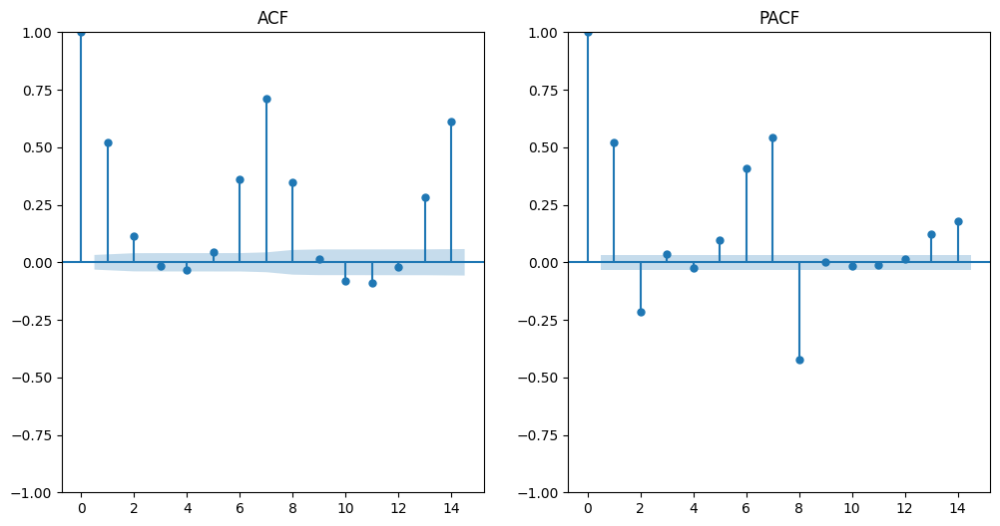
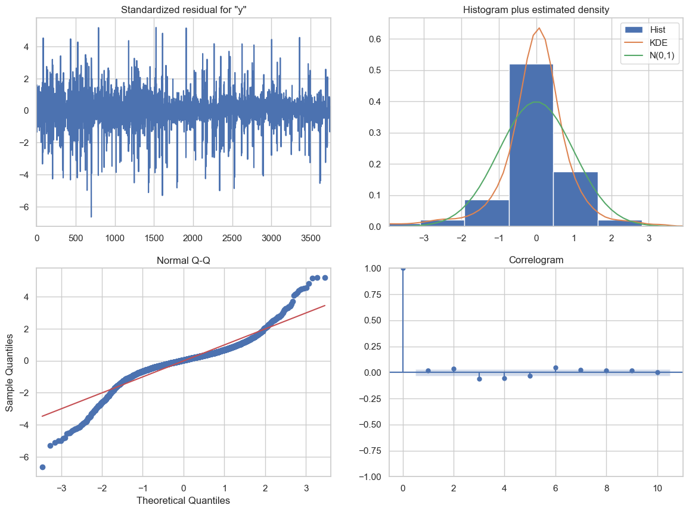
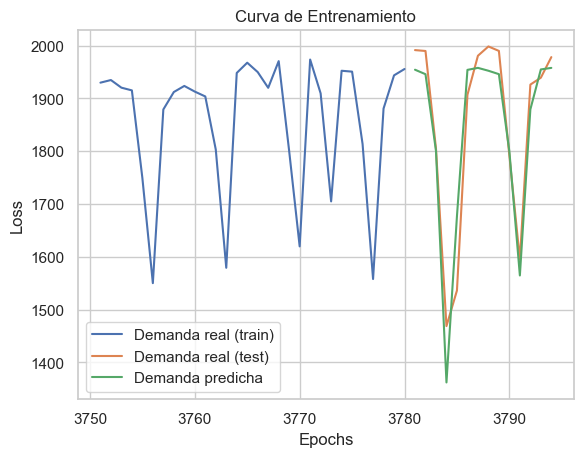
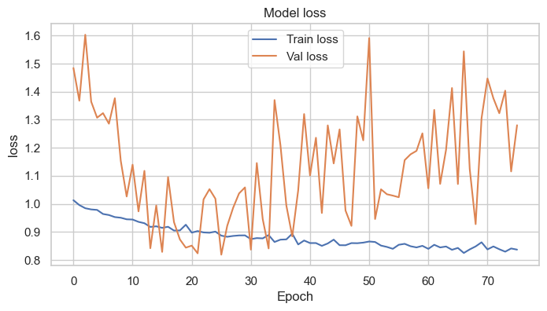
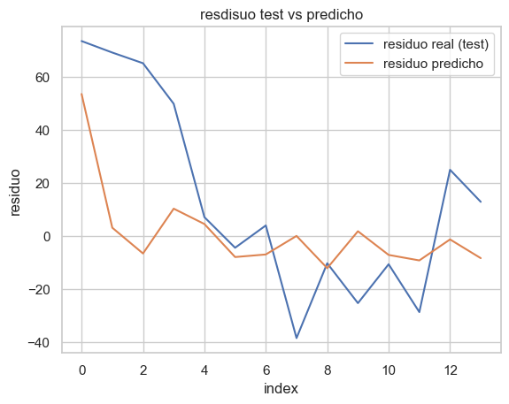
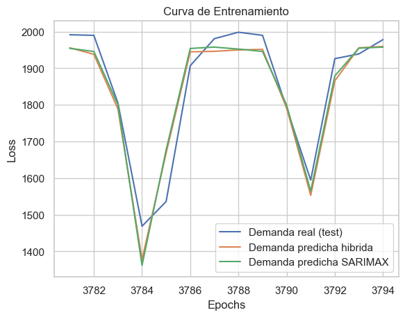

Modelo propuesto (Híbrido)#
import pandas as pd
import numpy as np
import itertools
import matplotlib.pyplot as plt
import random
import warnings
import seaborn as sns
warnings.filterwarnings("ignore")
from statsmodels.tsa.statespace.sarimax import SARIMAX
from sklearn.metrics import mean_absolute_percentage_error, mean_absolute_error, root_mean_squared_error,r2_score
from sklearn.preprocessing import StandardScaler
from itertools import product
from tqdm import tqdm
import os
import keras.backend as K
import statsmodels.api as sm
import tensorflow as tf
from scipy import stats
import gc
from statsmodels.graphics.tsaplots import plot_acf
from tensorflow.keras.models import Sequential, load_model
from tensorflow.keras.layers import Dense, SimpleRNN, LSTM, Dropout
from tensorflow.keras.optimizers import Adam
from tensorflow.keras.callbacks import EarlyStopping, ModelCheckpoint
from statsmodels.stats.diagnostic import acorr_ljungbox
from statsmodels.graphics.gofplots import qqplot
gpus = tf.config.list_physical_devices('GPU')
if gpus:
print("TensorFlow is using GPU.")
for gpu in gpus:
gpu_details = tf.config.experimental.get_device_details(gpu)
print(f"GPU details: {gpu_details}")
else:
print("TensorFlow is not using GPU.")
TensorFlow is using GPU.
GPU details: {'device_name': 'NVIDIA GeForce RTX 2060 SUPER', 'compute_capability': (7, 5)}
df = pd.read_csv('../../data/consumo_silver.csv')
df = df.iloc[:-1] # se omite el primer dato porque está incompleto
df.drop(columns="FESTIVO", inplace=True)
df['ds'] = pd.to_datetime(df['DateTime'])
df['y'] = df['CONSUMO']
# data = df[["ds","y",""]].copy()
df = pd.concat([df, pd.get_dummies(df["TIPO_DIA"])*1],axis=1)
df.head()
| DateTime | CONSUMO | TIPO_DIA | DIA_SEM | MES | AÑO | PANDEMIA | ds | y | FESTIVO | NORMAL | |
|---|---|---|---|---|---|---|---|---|---|---|---|
| 0 | 2014-01-01 | 1025.77354 | FESTIVO | 2 | 1 | 2014 | 0 | 2014-01-01 | 1025.77354 | 1 | 0 |
| 1 | 2014-01-02 | 1478.33453 | NORMAL | 3 | 1 | 2014 | 0 | 2014-01-02 | 1478.33453 | 0 | 1 |
| 2 | 2014-01-03 | 1610.05269 | NORMAL | 4 | 1 | 2014 | 0 | 2014-01-03 | 1610.05269 | 0 | 1 |
| 3 | 2014-01-04 | 1578.83430 | NORMAL | 5 | 1 | 2014 | 0 | 2014-01-04 | 1578.83430 | 0 | 1 |
| 4 | 2014-01-05 | 1328.31417 | NORMAL | 6 | 1 | 2014 | 0 | 2014-01-05 | 1328.31417 | 0 | 1 |
SARIMAX#
Inicilamente construimos un modelos Sarimax
len_test = 14 # días para test
n_datos = len(df)
train_serie = df["y"].iloc[:-len_test]
test_serie= df["y"].iloc[-len_test:]
exo_var_train = df["FESTIVO"].iloc[:-len_test]
exo_var_test = df["FESTIVO"].iloc[-len_test:]
from statsmodels.tsa.stattools import adfuller
result = adfuller(train_serie)
print('Estadístico ADF:', result[0])
print('Valor p:', result[1])
Estadístico ADF: -7.558172323670649
Valor p: 3.059853137845971e-11
from statsmodels.graphics.tsaplots import plot_acf, plot_pacf
plt.figure(figsize=(12, 6))
plt.subplot(1, 2, 1)
plot_acf(train_serie, lags=14, ax=plt.gca())
plt.title('ACF')
plt.subplot(1, 2, 2)
plot_pacf(train_serie, lags=14, ax=plt.gca())
plt.title('PACF')
plt.show()

def train_sarimax(train_data, exog_train, order, seasonal_order):
"""
Entrena el modelo SARIMAX
"""
model = SARIMAX(train_data,
exog=exog_train,
order=order,
seasonal_order=seasonal_order,
enforce_stationarity=False,
enforce_invertibility=False)
results = model.fit(disp=False)
return results
n_combinations = 20
# Define los rangos para p, d, q
p = d = q = range(0, 3)
pdq = list(product(p, d, q))
# Para modelos estacionales
seasonal_pdq = [(x[0], x[1], x[2], 7) for x in pdq] # Estacionalidad semanal
random.seed(1995)
random_params = random.sample(list(product(pdq, seasonal_pdq)), n_combinations)
aic_values = []
parameters = []
for param in tqdm(random_params):
try:
# Ajustar el modelo SARIMAX
#model = SARIMAX(data['valor'], order=param[0], seasonal_order=param[1])
results = train_sarimax(train_serie, exo_var_train, param[0], param[1])
aic_values.append(results.aic)
parameters.append(param)
except Exception as e:
continue
# Seleccionar el modelo con menor AIC
index_min = np.argmin(aic_values)
best_param, best_seasonal_param = parameters[index_min]
print('Mejores parámetros:', best_param, best_seasonal_param)
0%| | 0/20 [00:00<?, ?it/s]
5%|██████▋ | 1/20 [00:08<02:39, 8.42s/it]
5%|██████▋ | 1/20 [00:30<09:30, 30.04s/it]
# De las varias iteraciones que se han realidado
mejores_parametros_encontrados = [(1, 0, 2), (0, 1, 2, 7)]
model = SARIMAX(train_serie,
exog=exo_var_train,
order=(1, 0, 2),
seasonal_order=(0, 1, 2, 7),
enforce_stationarity=False,
enforce_invertibility=False)
sarimax_fit = model.fit(disp=False)
sarimax_fit.save('models/modelo_sarimax.pkl')
def calculate_metrics(y_true, y_pred):
rmse = root_mean_squared_error(y_true, y_pred)
metrics = {
"MAPE": mean_absolute_percentage_error(y_true, y_pred),
"MAE": mean_absolute_error(y_true, y_pred),
"RMSE": rmse,
"MSE": rmse**2,
"R2": r2_score(y_true, y_pred)
}
return metrics
model_summary = []
forecast = sarimax_fit.get_prediction(start=train_serie.index[0], end=train_serie.index[-1], exog=exo_var_train)
y_train_pred = forecast.predicted_mean
y_true, y_pred = train_serie, y_train_pred
resultado_train = calculate_metrics(y_true, y_pred)
residuals_train = y_true - y_pred
model_summary.append(pd.DataFrame([resultado_train], index=["SARIMAX_train"]))
pd.DataFrame([resultado_train])
| MAPE | MAE | RMSE | MSE | R2 | |
|---|---|---|---|---|---|
| 0 | 0.030525 | 53.074106 | 85.537032 | 7316.583782 | 0.816471 |
forecast = sarimax_fit.get_prediction(start=test_serie.index[0], end=test_serie.index[-1], exog=exo_var_test)
y_test_pred = forecast.predicted_mean
y_true, y_pred = test_serie, y_test_pred
resultado_val = calculate_metrics(y_true, y_pred)
residuals_val = y_true - y_pred
model_summary.append(pd.DataFrame([resultado_val], index=["SARIMAX_test"]))
pd.DataFrame([resultado_val])
| MAPE | MAE | RMSE | MSE | R2 | |
|---|---|---|---|---|---|
| 0 | 0.025356 | 43.865262 | 56.802573 | 3226.532336 | 0.898728 |
sarimax_fit.plot_diagnostics(figsize=(14,10));

plt.figure()
plt.plot(train_serie.iloc[-30:].index, train_serie.iloc[-30:], label='Demanda real (train)')
plt.plot(test_serie.index, test_serie, label='Demanda real (test)')
plt.plot(test_serie.index, y_test_pred, label='Demanda predicha')
plt.title('Curva de Entrenamiento')
plt.xlabel('Epochs')
plt.ylabel('Loss')
plt.legend()
plt.show()

LSTM // RNN#
resid_serie = residuals_train
resid_serie.plot()
<Axes: >
def split_time_series(data, tau, train_nrows, train_ncols=0):
"""
train_ncols: Número de columnas para el train
train_nrows: Número de filas para el train
tau: número de rows y cols para val y test
"""
n_samples = len(data)
len_dim = train_nrows + tau * 2 # total filas por dim
splits = []
id_counter = 1
dim = 1
split_counter = 0
for start in range(n_samples):
if split_counter == 0:
if start + len_dim > n_samples:
break # No hay suficientes datos
current_dim_start_idx = len(splits)
train_ncols = tau
x_train_end = start + tau
x_tau_end = start + train_ncols
# Determinar el tipo de split
if split_counter < train_nrows:
split_type = "train"
X_data = data.iloc[start:x_train_end].values.copy() # Tomar train_ncols columnas
y_data = data.iloc[x_train_end:x_train_end +1 ].values.copy() # y correspondiente a train_nrows
elif split_counter < train_nrows + tau:
split_type = "val"
X_data = data.iloc[start:x_train_end].values.copy() # val: tau columnas
y_data = data.iloc[x_tau_end:x_tau_end + 1].values.copy() # y correspondiente al tau
elif split_counter < len_dim:
split_type = "test"
X_data = data.iloc[start:x_train_end].values.copy() # test: tau columnas
y_data = data.iloc[x_tau_end:x_tau_end + 1].values.copy() # y correspondiente al tau
else:
dim += 1
split_counter = 0
split_type = "train"
continue
if len(y_data) == 0:
break # algún muestra no tiene y, por tanto, no consideremos este dim
split_dict = {
"id": id_counter,
"dim": dim,
"split": split_type,
"X": X_data,
"y": y_data
}
splits.append(split_dict)
# Contadores
id_counter += 1
split_counter += 1
if split_counter >= len_dim:
dim += 1
split_counter = 0
df = pd.DataFrame(splits)
dim_ok = df["dim"].value_counts() == len_dim
df_ok = df.loc[df["dim"].isin(dim_ok[dim_ok].index)].copy()
return df_ok
tau_list = [7,14]
train_lens = [180,360]
datasets = {}
for tau, train_nrows in itertools.product(tau_list, train_lens):
key = f"tau{tau}_train_rows{train_nrows}"
dataset = split_time_series(data=resid_serie, tau=tau, train_nrows=train_nrows)
datasets[key] = dataset
datasets.keys()
dict_keys(['tau7_train_rows180', 'tau7_train_rows360', 'tau14_train_rows180', 'tau14_train_rows360'])
datasets.get("tau14_train_rows360")
| id | dim | split | X | y | |
|---|---|---|---|---|---|
| 0 | 1 | 1 | train | [1227.078109292743, 923.0650376329579, 618.435... | [49.19118016422294] |
| 1 | 2 | 1 | train | [923.0650376329579, 618.4356715183436, 347.809... | [-66.0997285318947] |
| 2 | 3 | 1 | train | [618.4356715183436, 347.80924699763636, 26.147... | [148.79822693608412] |
| 3 | 4 | 1 | train | [347.80924699763636, 26.14723310335262, 252.83... | [-92.79021604127888] |
| 4 | 5 | 1 | train | [26.14723310335262, 252.83460624929126, 475.79... | [-57.61687501975507] |
| ... | ... | ... | ... | ... | ... |
| 3487 | 3488 | 9 | test | [-59.401287223361805, -15.704979394911561, -10... | [37.79097496444433] |
| 3488 | 3489 | 9 | test | [-15.704979394911561, -10.667037634989356, 15.... | [0.2728034190006383] |
| 3489 | 3490 | 9 | test | [-10.667037634989356, 15.413215258233095, 24.0... | [-6.241298711532181] |
| 3490 | 3491 | 9 | test | [15.413215258233095, 24.00529719649694, -8.724... | [-50.71495463837505] |
| 3491 | 3492 | 9 | test | [24.00529719649694, -8.72413217852727, 26.4328... | [-221.4144333701429] |
3492 rows × 5 columns
def plot_residuals(resid, save_path):
"""
Genera y guarda una figura con tres subplots
"""
sns.set_theme(style="whitegrid")
fig, axs = plt.subplots(3, 1, figsize=(10, 15))
#Serie de Residuos
axs[0].plot(resid, color='blue')
axs[0].axhline(0, color='red', linestyle='--')
axs[0].set_title('Serie de Residuos')
axs[0].set_xlabel('Índice')
axs[0].set_ylabel('Residuo')
#QQPlot de Residuos
sm.qqplot(resid, line='s', ax=axs[1])
axs[1].set_title('QQPlot de Residuos')
#ACF de Residuos
plot_acf(resid, ax=axs[2], lags=min(20, len(resid)-1))
axs[2].set_title('ACF de Residuos')
plt.tight_layout()
plt.savefig(save_path)
plt.close()
def create_and_train_model(model_type, neurons, dropout_rate, batch_size, X_train, y_train, X_val, y_val, key, dim):
model = Sequential()
if model_type == 'RNN':
#(samples, timesteps, features)
model.add(SimpleRNN(neurons, activation='tanh', input_shape=(X_train.shape[1], X_train.shape[2])))
model.add(Dropout(dropout_rate))
model.add(Dense(64, activation='relu'))
model.add(Dense(32, activation='relu'))
model.add(Dense(1))
elif model_type == 'LSTM':
#(samples, timesteps, features)
model.add(LSTM(neurons, activation='tanh', input_shape=(X_train.shape[1], X_train.shape[2])))
model.add(Dropout(dropout_rate))
model.add(Dense(64, activation='relu'))
model.add(Dense(32, activation='relu'))
model.add(Dense(1))
else:
raise ValueError("Modelo inválido")
model.compile(optimizer=Adam(), loss='mse', metrics=['mape','mae', 'mse'])
checkpoint_dir = f'models/{key}'
os.makedirs(checkpoint_dir, exist_ok=True)
early_stopping = EarlyStopping(monitor='val_loss', patience=50, restore_best_weights=True)
model_checkpoint = ModelCheckpoint(
f'{checkpoint_dir}/best_model_dim{dim}_{model_type}.h5',
save_best_only=True,
monitor='val_loss'
)
history = model.fit(
X_train, y_train,
epochs=100,
batch_size=batch_size,
validation_data=(X_val, y_val),
verbose=0,
callbacks=[early_stopping, model_checkpoint]
)
return model, history
# Definición de la función para procesar y entrenar modelos
def process_and_train_models(key, df_model, model_types, neurons, dropout_rate, batch_size):
"""
Procesa los datos para cada dim y entrena modelos de diferentes tipos.
"""
resultados_entrenamiento = []
resultados_test = []
unique_dims = df_model["dim"].unique()
for dim in tqdm(unique_dims):
df_dim = df_model.loc[df_model["dim"] == dim]
# Procesar datos para entrenamiento, validación y prueba
splits = {}
for split in ["train", "val", "test"]:
X_split, y_split = (
df_dim.loc[df_dim["split"] == split, "X"].tolist(),
df_dim.loc[df_dim["split"] == split, "y"].tolist()
)
X_split = np.array([np.array(xi).flatten() for xi in X_split])
y_split = np.array([np.array(yi).flatten() for yi in y_split])
splits[split] = (X_split, y_split)
# Escalar los datos
scaler_X = StandardScaler()
scaler_y = StandardScaler()
X_train, y_train = splits["train"]
X_train_scaled = scaler_X.fit_transform(X_train)
y_train_scaled = scaler_y.fit_transform(y_train.reshape(-1, 1)).flatten()
X_val, y_val = splits["val"]
X_val_scaled = scaler_X.transform(X_val)
y_val_scaled = scaler_y.transform(y_val.reshape(-1, 1)).flatten()
X_test, y_test = splits["test"]
X_test_scaled = scaler_X.transform(X_test)
y_test_scaled = scaler_y.transform(y_test.reshape(-1, 1)).flatten()
# Re-dimensionar para RNN/LSTM
X_train_rnn = X_train_scaled.reshape((X_train_scaled.shape[0], X_train_scaled.shape[1], 1))
X_val_rnn = X_val_scaled.reshape((X_val_scaled.shape[0], X_val_scaled.shape[1], 1))
X_test_rnn = X_test_scaled.reshape((X_test_scaled.shape[0], X_test_scaled.shape[1], 1))
# Actualizar splits con datos escalados
splits_scaled = {
"train": (X_train_scaled, y_train_scaled),
"val": (X_val_scaled, y_val_scaled),
"test": (X_test_scaled, y_test_scaled),
"train_rnn": (X_train_rnn, y_train_scaled),
"val_rnn": (X_val_rnn, y_val_scaled),
"test_rnn": (X_test_rnn, y_test_scaled)
}
# Entrenar y evaluar modelos
for model_type in model_types:
try:
if model_type in ['RNN', 'LSTM']:
X_train_model, y_train_model = splits_scaled["train_rnn"]
X_val_model, y_val_model = splits_scaled["val_rnn"]
X_test_model, y_test_model = splits_scaled["test_rnn"]
elif model_type == 'MLP':
X_train_model, y_train_model = splits_scaled["train"]
X_val_model, y_val_model = splits_scaled["val"]
X_test_model, y_test_model = splits_scaled["test"]
else:
raise ValueError(f"Tipo de modelo desconocido: {model_type}")
# Entrenar el modelo
model, history = create_and_train_model(
model_type=model_type,
neurons=neurons,
dropout_rate=dropout_rate,
batch_size=batch_size,
X_train=X_train_model,
y_train=y_train_model,
X_val=X_val_model,
y_val=y_val_model,
key=key,
dim=dim
)
history_dir = os.path.join('history', str(key))
os.makedirs(history_dir, exist_ok=True)
history_name = os.path.join(
history_dir,
f'historytrain_{model_type}_neurons{neurons}_dropout{dropout_rate}_batch{batch_size}.csv'
)
history_df = pd.DataFrame(history.history)
pd.DataFrame(history_df).to_csv(history_name, index=False)
# Evaluar en el conjunto de entrenamiento
y_train_pred = model.predict(X_train_model, verbose=0).flatten()
residuals_train = y_train_model - y_train_pred
mape_train = mean_absolute_percentage_error(y_train_model, y_train_pred)
mae_train = mean_absolute_error(y_train_model, y_train_pred)
rmse_train = root_mean_squared_error(y_train_model, y_train_pred)
mse_train = rmse_train**2
r2_train = r2_score(y_train_model, y_train_pred)
# Guardar figuras
fig_dir = f'figures/{key}/{model_type}'
os.makedirs(fig_dir, exist_ok=True)
residuals_plot_path = os.path.join(fig_dir, f'residuals_analysis_dim{dim}_neurons{neurons}_dropout{dropout_rate}_batch{batch_size}.png')
plot_residuals(residuals_train, residuals_plot_path)
# Almacenar los resultados en el conjunto de entrenamiento
resultado_entrenamiento = {
"key": key,
"dim": dim,
"model_type": model_type,
"neurons": neurons,
"dropout_rate": dropout_rate,
"batch_size": batch_size,
"MAPE": mape_train,
"MAE": mae_train,
"RMSE": rmse_train,
"MSE": mse_train,
"R2": r2_train,
}
resultados_entrenamiento.append(resultado_entrenamiento)
# Evaluar en el conjunto de prueba
y_test_pred = model.predict(X_test_model, verbose=0).flatten()
residuals_test = y_test_model - y_test_pred
mape_test = mean_absolute_percentage_error(y_test_model, y_test_pred)
mae_test = mean_absolute_error(y_test_model, y_test_pred)
rmse_test = root_mean_squared_error(y_test_model, y_test_pred)
mse_test = rmse_test**2
r2_test = r2_score(y_test_model, y_test_pred)
# Almacenar los resultados en el conjunto de prueba
resultado_test = {
"key": key,
"dim": dim,
"model_type": model_type,
"neurons": neurons,
"dropout_rate": dropout_rate,
"batch_size": batch_size,
"MAPE": mape_test,
"MAE": mae_test,
"RMSE": rmse_test,
"MSE": mse_test,
"R2": r2_test,
}
resultados_test.append(resultado_test)
plt.figure()
epochs = range(1, len(history.history['loss']) + 1)
plt.plot(epochs, history.history['loss'], label='Loss Entrenamiento')
plt.plot(epochs, history.history['val_loss'], label='Loss Validación')
plt.title('Curva de Entrenamiento')
plt.xlabel('Epochs')
plt.ylabel('Loss')
plt.legend()
plt.savefig(f'{fig_dir}/training_history_dim{dim}_neurons{neurons}_dropout{dropout_rate}_batch{batch_size}.png')
plt.close()
# Liberar memoria
del model, history, residuals_train, residuals_test
gc.collect()
except Exception as e:
print(f"Error al entrenar {model_type} para key={key}, neurons={neurons}, dim={dim}: {e}")
continue
try:
results_dir = f'results/{key}'
os.makedirs(results_dir, exist_ok=True)
train_csv_path = f'{results_dir}/results_train_neurons{neurons}_dropout{dropout_rate}_batch{batch_size}.csv'
test_csv_path = f'{results_dir}/results_test_neurons{neurons}_dropout{dropout_rate}_batch{batch_size}.csv'
pd.DataFrame(resultados_entrenamiento).to_csv(train_csv_path, index=False)
pd.DataFrame(resultados_test).to_csv(test_csv_path, index=False)
print(f"Entrenamiento exitoso para key={key}, neurons={neurons}, dropout={dropout_rate}, batch_size={batch_size}.")
return {
"key": key,
"neurons": neurons,
"dropout_rate": dropout_rate,
"batch_size": batch_size,
"status": "success",
"results_dir": results_dir
}
except Exception as e:
print(f"Error al guardar resultados para key={key}, neurons={neurons}, dropout={dropout_rate}, batch_size={batch_size}: {e}")
return {
"key": key,
"neurons": neurons,
"dropout_rate": dropout_rate,
"batch_size": batch_size,
"status": "failed",
"error": str(e)
}
def configure_tf():
K.set_floatx("float32")
os.environ['TF_CPP_MIN_LOG_LEVEL'] = "3"
physical_devices = tf.config.list_physical_devices("GPU")
if physical_devices:
try:
for device in physical_devices:
tf.config.experimental.set_memory_growth(device, False)
except RuntimeError as e:
print(e)
if __name__ == "__main__":
# Configurar TensorFlow
configure_tf()
# Definir las listas de parámetros
keys = [
"tau14_train_rows180", "tau7_train_rows180"
]
neurons_list = [8,32,64]
dropout_rate_list = [0.1]
batch_size_list = [32]
model_types = ['RNN']
all_combinations = list(itertools.product(keys, neurons_list, dropout_rate_list, batch_size_list))
all_results = []
# Procesar cada configuración secuencialmente
for combo in all_combinations:
key, neurons, dropout_rate, batch_size = combo
df_model = datasets.get(key)
df_model = df_model.loc[df_model["dim"].isin(df_model["dim"].unique())]
result = process_and_train_models(key, df_model, model_types, neurons, dropout_rate,batch_size)
all_results.append(result)
Physical devices cannot be modified after being initialized
100%|██████████| 18/18 [04:16<00:00, 14.23s/it]
Entrenamiento exitoso para key=tau14_train_rows180, neurons=8, dropout=0.1, batch_size=32.
100%|██████████| 18/18 [04:02<00:00, 13.45s/it]
Entrenamiento exitoso para key=tau14_train_rows180, neurons=32, dropout=0.1, batch_size=32.
100%|██████████| 18/18 [03:47<00:00, 12.62s/it]
Entrenamiento exitoso para key=tau14_train_rows180, neurons=64, dropout=0.1, batch_size=32.
100%|██████████| 19/19 [03:39<00:00, 11.57s/it]
Entrenamiento exitoso para key=tau7_train_rows180, neurons=8, dropout=0.1, batch_size=32.
100%|██████████| 19/19 [03:44<00:00, 11.81s/it]
Entrenamiento exitoso para key=tau7_train_rows180, neurons=32, dropout=0.1, batch_size=32.
100%|██████████| 19/19 [03:22<00:00, 10.64s/it]
Entrenamiento exitoso para key=tau7_train_rows180, neurons=64, dropout=0.1, batch_size=32.
from pathlib import Path
ruta_results = Path('results')
lista_dfs = []
for archivo in ruta_results.rglob('*.csv'):
df = pd.read_csv(archivo)
df['nombre_archivo'] = archivo.name
df["split"] = df["nombre_archivo"].str.split("_",expand=True)[1]
lista_dfs.append(df)
todos_resultados = pd.concat(lista_dfs, ignore_index=True)
todos_resultados_test = todos_resultados.loc[todos_resultados["split"] == "test"]
todos_resultados_test.groupby(["key", "dim","neurons"]).mean(numeric_only=True).reset_index().sort_values(by="MSE").head()
| key | dim | neurons | dropout_rate | batch_size | MAPE | MAE | RMSE | MSE | R2 | |
|---|---|---|---|---|---|---|---|---|---|---|
| 24 | tau14_train_rows180 | 9 | 8 | 0.1 | 32.0 | 1.163410 | 0.205358 | 0.240438 | 0.057810 | 0.293229 |
| 26 | tau14_train_rows180 | 9 | 64 | 0.1 | 32.0 | 1.796235 | 0.250610 | 0.286929 | 0.082328 | -0.006522 |
| 25 | tau14_train_rows180 | 9 | 32 | 0.1 | 32.0 | 1.502835 | 0.256216 | 0.292152 | 0.085353 | -0.043498 |
| 63 | tau7_train_rows180 | 4 | 8 | 0.1 | 32.0 | 2.234208 | 0.301089 | 0.355884 | 0.126653 | 0.103585 |
| 65 | tau7_train_rows180 | 4 | 64 | 0.1 | 32.0 | 3.486874 | 0.333231 | 0.378549 | 0.143299 | -0.014230 |
best model#
key = "tau14_train_rows180"
df_dim = datasets.get(key)
df_dim["split"].iloc[:-len_test*2] = "train"
df_dim["split"].iloc[-len_test*2:-len_test] = "val"
df_dim["split"].iloc[-len_test:] = "test"
splits = {}
for split in ["train", "val", "test"]:
X_split, y_split = (
df_dim.loc[df_dim["split"] == split, "X"].tolist(),
df_dim.loc[df_dim["split"] == split, "y"].tolist()
)
X_split = np.array([np.array(xi).flatten() for xi in X_split])
y_split = np.array([np.array(yi).flatten() for yi in y_split])
splits[split] = (X_split, y_split)
scaler_X = StandardScaler()
scaler_y = StandardScaler()
X_train, y_train = splits["train"]
X_train_scaled = scaler_X.fit_transform(X_train)
y_train_scaled = scaler_y.fit_transform(y_train.reshape(-1, 1)).flatten()
X_val, y_val = splits["val"]
X_val_scaled = scaler_X.transform(X_val)
y_val_scaled = scaler_y.transform(y_val.reshape(-1, 1)).flatten()
X_test, y_test = splits["test"]
X_test_scaled = scaler_X.transform(X_test)
y_test_scaled = scaler_y.transform(y_test.reshape(-1, 1)).flatten()
X_train_rnn = X_train_scaled.reshape((X_train_scaled.shape[0], X_train_scaled.shape[1], 1))
X_val_rnn = X_val_scaled.reshape((X_val_scaled.shape[0], X_val_scaled.shape[1], 1))
X_test_rnn = X_test_scaled.reshape((X_test_scaled.shape[0], X_test_scaled.shape[1], 1))
splits_scaled = {
"train": (X_train_scaled, y_train_scaled),
"val": (X_val_scaled, y_val_scaled),
"test": (X_test_scaled, y_test_scaled),
"train_rnn": (X_train_rnn, y_train_scaled),
"val_rnn": (X_val_rnn, y_val_scaled),
"test_rnn": (X_test_rnn, y_test_scaled)
}
X_train_model, y_train_model = splits_scaled["train_rnn"]
X_val_model, y_val_model = splits_scaled["val_rnn"]
X_test_model, y_test_model = splits_scaled["test_rnn"]
print(X_train_model.shape)
print(y_train_model.shape)
(3716, 14, 1)
(3716,)
model, history = create_and_train_model(
model_type="RNN",
neurons=8,
dropout_rate=0.1,
batch_size=32,
X_train=X_train_model,
y_train=y_train_model,
X_val=X_val_model,
y_val=y_val_model,
key=key,
dim=999
)
plt.figure(figsize=(8, 4))
plt.plot(history.history["loss"], label='Train loss')
plt.plot(history.history['val_loss'], label=f'Val loss')
plt.title(f'Model loss')
plt.ylabel("loss")
plt.xlabel('Epoch')
plt.legend()
plt.show()

Predicción#
y_pred_scaled = model.predict(X_test_model, verbose=0)
y_pred_rnn = scaler_y.inverse_transform(y_pred_scaled.reshape(-1, 1)).flatten()
y_test_rnn = scaler_y.inverse_transform(y_test_model.reshape(-1, 1)).flatten()
resultado_rnn_test = calculate_metrics(y_test_rnn, y_pred_rnn)
pd.DataFrame([resultado_rnn_test])
| MAPE | MAE | RMSE | MSE | R2 | |
|---|---|---|---|---|---|
| 0 | 0.927789 | 25.193364 | 33.167251 | 1100.066509 | 0.165519 |
plt.figure()
plt.plot(y_test_rnn, label='residuo real (test)')
plt.plot(y_pred_rnn, label='residuo predicho')
plt.title('resdisuo test vs predicho')
plt.xlabel('index')
plt.ylabel('residuo')
plt.legend()
plt.show()

def predict_next_14_days(residuals_last_14_days, festivos_next_14_days, sarimax_model, rnn_model, residuals_scaler):
"""
Predice los próximos 14 días utilizando los modelos SARIMAX y RNN combinados.
"""
residuals_last_14_days = np.array(residuals_last_14_days)
festivos_next_14_days = np.array(festivos_next_14_days)
# Escalar los residuos de entrada
residuals_scaled = residuals_scaler.transform(residuals_last_14_days.reshape(-1, 1))
n_steps_in = residuals_scaled.shape[0]
X_input_rnn = residuals_scaled.reshape((1, n_steps_in, 1))
predicted_residuals = []
for _ in range(14):
y_pred_residual_scaled = rnn_model.predict(X_input_rnn, verbose=0)
y_pred_residual = residuals_scaler.inverse_transform(y_pred_residual_scaled).flatten()[0]
predicted_residuals.append(y_pred_residual)
X_input_rnn = np.roll(X_input_rnn, -1, axis=1)
X_input_rnn[0, -1, 0] = y_pred_residual_scaled.flatten()[0]
sarimax_forecast = sarimax_model.get_forecast(steps=14, exog=festivos_next_14_days)
sarimax_pred = sarimax_forecast.predicted_mean.values
hybrid_pred = sarimax_pred + np.array(predicted_residuals)
return sarimax_pred, predicted_residuals, hybrid_pred
residuals_last_14_days = resid_serie.tail(14).tolist()
festivos_next_14_days = exo_var_test.tolist()
sar_prd, rnn_pred, final_predict = predict_next_14_days(
residuals_last_14_days,
festivos_next_14_days,
sarimax_fit,
model,
scaler_y)
y_true, y_pred = test_serie, final_predict
resultado_test_hibry = calculate_metrics(y_true, y_pred)
model_summary.append(pd.DataFrame([resultado_test_hibry], index=["Hibrido_test"]))
pd.DataFrame([resultado_test_hibry])
| MAPE | MAE | RMSE | MSE | R2 | |
|---|---|---|---|---|---|
| 0 | 0.025538 | 44.563812 | 55.079951 | 3033.801008 | 0.904777 |
plt.figure()
plt.plot(test_serie.index, y_true, label='Demanda real (test)')
plt.plot(test_serie.index, y_pred, label='Demanda predicha hibrida')
plt.plot(test_serie.index, sar_prd, label='Demanda predicha SARIMAX')
plt.title('Curva de Entrenamiento')
plt.xlabel('Epochs')
plt.ylabel('Loss')
plt.legend()
plt.show()

model_summary_df = pd.concat(model_summary)
model_summary_df
| MAPE | MAE | RMSE | MSE | R2 | |
|---|---|---|---|---|---|
| SARIMAX_train | 0.030525 | 53.074106 | 85.537032 | 7316.583782 | 0.816471 |
| SARIMAX_test | 0.025356 | 43.865262 | 56.802573 | 3226.532336 | 0.898728 |
| Hibrido_test | 0.025538 | 44.563812 | 55.079951 | 3033.801008 | 0.904777 |
model_summary_df.to_csv("model_summary.csv")